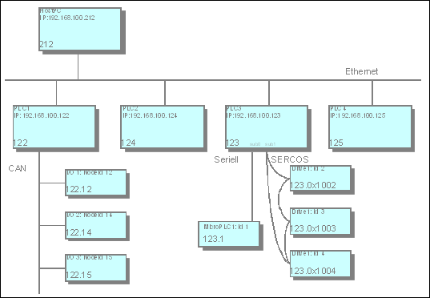

1.5.4. Network Topology and Addressing¶
The aim is to create a system that largely configures itself (address assignment), transparently supports any communication media, and can route packets between different networks. The routing mechanism should be simple enough such that any node in the network, i.e. even nodes with low resources, can reroute packets. In particularly this means that large routing tables, complex calculations, or requests at runtime should be avoided.
1.5.4.1. Topology¶
A control network should generally be configured hierarchically, i.e. each node has one parent node and any number of children. Cycles are not permitted, i.e. a control network has a tree structure.
Parent-child relationships arise from the specification of network segments. A network segment corresponds to a local Ethernet or a serial point-to-point connection, for example. A distinction is made between the main network (main net) and the sub-networks (subnet). Each node may have several main nets as well as each main net may have several subnets. Each main net acts as a parent for the attached subnets.
If the same network segment was simultaneously defined as a subnet of several nodes, the network would have several parents. This is an invalid configuration, since each network segment can only have one parent.
A node without parent is referred to as top-level node.
1.5.4.2. Addressing and routing¶
Addresses map the topology of a control network to unique addresses.
Node addresses are structured hierarchically. Each network connection is allocated a local address by the relevant block driver through which the node is unambiguously identified in the respective network. The node address is now formed by first appending the index of the subnet (in the parent) in which the node is located then subsequently the local address of the main network connection to the address of the parent. A node without main network is a top-level node with address 0. A node with a main network that does not contain a parent is assigned its local address in the main network.
Due to the address structure the routing algorithm can be kept relatively lean. No routing tables are required. The only requirement is local information about the own address and the address of the parent node:
- Target address identical to own address? Current node is receiver
- Target address starts with own address? Packet is intended for a
- child or descendant of the node. Forward to associated child node.
- Otherwise: Packet is not a descendant of the current node. Forward to
- own parent.
Relative addresses are a special feature. They do not contain the node number of the receiver node, but directly describe the path from the sender to the receiver. The principle is similar to a relative path in the file system: The address is comprised of the number of steps the packet has to move “up”, i.e. to the next respective parent, and the subsequent path down to the target node.
The advantage of a relative address is that two nodes within the same sub tree can continue to communicate if the whole subtree is moved to another position within the overall control network. While the absolute node addresses change during such a move, the relative addresses are preserved.
1.5.4.2.1. Parallel routing¶
Parallel routing represents a direct communication mechanism between two router instances on the same node. It is used when there are at least two networks on the same node that should not end up in a main net – subnet relationship (E.g. a PC with two network cards on independent Ethernet segments).
The “ReceiverAdr” (see Router Communication) of an incoming packet is screened by the receiving router instance for a special marker identifying a parallel router on the same node. If this marker exists, both “ReceiverAdr ” and “SenderAdr” are updated by the receiving router:
- The existing marker will be removed from the incoming “ReceiverAdr”.
- A new marker will be added to the “SenderAdr” for identifying the
- current router.
If the new “ReceiverAdr” is identical to the address of the parallel router, the acting node is the correct recipient and the packet will be handled locally. If not, the packet will directly be sent to the other network segment to be handled there by a different node.
1.5.4.3. Address determination¶
In order to be able form its own address, each node must know the address of its parent node or detect that it is a top-level node. To this end it sends an address determination message as a broadcast to its main network during bootup. The parent node responds with an address notification. The node then passes on the modified address to its subnet. Until it receives a response to the address determination message the node considers itself to be a top-level node, although it will continue to try and detect a parent node at suitable intervals.
Address determination can be executed at bootup or when requested by the programming PC.
Once the address of a node is frozen, no further address determination is required. An address notification by the parent node with an address that differs from the stored address should be regarded as a fault.
1.5.4.4. Address structure¶
1.5.4.4.1. Network addresses¶
Network addresses represent a mapping of the addresses of a network type (e.g. IP addresses) to a logical address within a control network. This mapping is handled by the respective block driver. Within an Ethernet with Class C IP addresses the first 3 bytes of the IP address are identical for all network devices. The last 8 bits of the IP address therefore suffice as network address, since they enable unambiguous mapping between the two addresses at the block driver.
A node has separate network addresses for each network connection. Different network connections may have the same network address, since this address only has to be unique locally for each network connection.
Terminology: In general, the network address of node without statement of the network connection refers to the network address in the main network.
The length of a network address is specified in bits and can be chosen by the block driver as required. Within a network segment the same length must be used for all nodes. A network address is represented as an array of bytes with the following coding:
- Length of the network address: n bits
- Required bytes: b = (n + 7) DIV 8
- The (n MOD 8) lowest-order bits of the first byte and all remaining
- (n DIV 8) bytes are used for the network address.

1.5.4.4.2. Node addresses¶
The node address indicates the absolute address of a node within a control network and is therefore unique in the whole “tree”. It consists of up to 15 address components, each consisting of two bytes. The lower a node is located within the network hierarchy, the longer its address.
The node address is comprised of the partial addresses of all predecessors of the node and the node itself. Each partial address consists of one or several address components. The length is therefore always a multiple of two. The partial address of a node is formed from the network address of the node in its main network and the subnet index of the main network in the parent node. The bits required for the subnet index are determined by the router of the parent node. Filler bits are inserted between the subnet index and the network address in order to ensure that the length of the partial address is a multiple of 2 bytes.
Special cases:
- Node has no main network: This means there is no subnet index nor
- a network address in the main network. In this case the address is set to 0x0000.
- Node with main network but without parent: In this case a subnet
- index with 0 bit length is assumed. The partial address corresponds to the network address, supplemented with filler bits if required.
The node address representation is always hexadecimal. The individual address components (two bytes in each case) are separated by a ”:” (colon). The bytes within a component appear sequentially without separator (see example above). Since this represents a byte array and not a 16-bit value, the components are not displayed in little-endian format. For manually entered addresses missing digits in an address component are filled with leading zeros from the left: “274” = “0274”. To improve readability the output should always include the leading zeros.
1.5.4.4.3. Absolute and relative addresses¶
Communication between two nodes can be based on relative or absolute addresses. Absolute addresses are identical to node addresses. Relative addresses specify a path from the sender to the receiver. They consist of an address offset and a descending path to the receiver.
The (negative) address offset describes the number of address components that a packet has to be handed upwards in the tree before it can be handed down again from a common parent. Since nodes can use partial addresses consisting of more than one address component, the number of parent nodes to be passed is always = the address offset. This means that the demarcation between parent nodes is no longer unambiguous, which is why the common initial part of the addresses of the communication partners is used as parent address. Each address component is counted as an upward step, irrespective of the actual parent nodes. Any errors introduced by these assumptions can be detected by the respective parent node and must be handled correctly by the node.
On arrival at the common parent the relative path (an array of address components) is then followed downwards in the normal way.
Formal: The node address of the receiver is formed by removing the last AdressOffset components from the node address of the sender and appending the relative path to the remaining address.
Example:
To ensure that the routing works correctly, the relative address must be adjusted with each pass through an intermediate node. It is sufficient to adjust the address offset. This is always done by the parent node: If a node receives a packet from one of its subnets, the address offset is increased by the length of the address component of this subnet. If the new address offset is < 0 the packet must be forwarded to the parent node. If the address offset >= 0 the packet must be forwarded to the child node whose local address is located at the position described by the address offset within the relative address. First, the address offset must be increased by the length of the local address of the child node to ensure that the node sees a correct address.
A special case is created by a situation in which the above described error occurs when the common parent is determined. In this case the address offset at the “real” common parent is negative, but the magnitude is greater than the length of the partial address of the subnet from which the packet originates. The node must detect this case, calculate the local address of the next child node based on the address of the previous node and the length difference, and adapt the address offset such that the next node sees a correct relative address. Here too the address components themselves remain unchanged, only the address offset changes.
1.5.4.4.4. Broadcast addresses¶
There are two types of broadcast – global and local. A global broadcast is sent to all nodes within a control network. The empty node address (length 0) is reserved for this purpose.
Local broadcasts are sent to all devices of a network segment. For this purpose, all bits of the network address are set to 1. This is possible both in relative and in absolute addresses.
A block driver must be able to handle both broadcast addresses, i.e. empty network addresses and network addresses with all bits set to 1 must be interpreted and sent as broadcast.